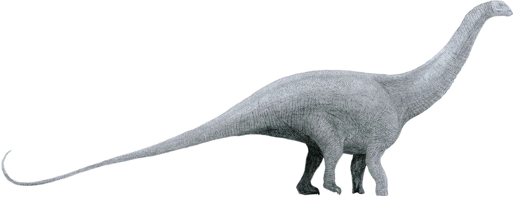
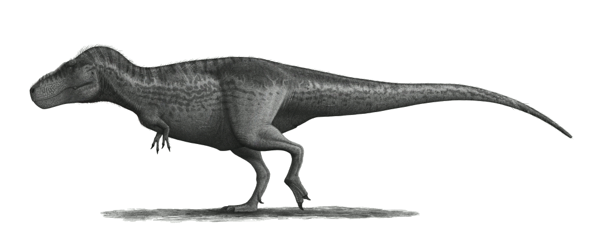
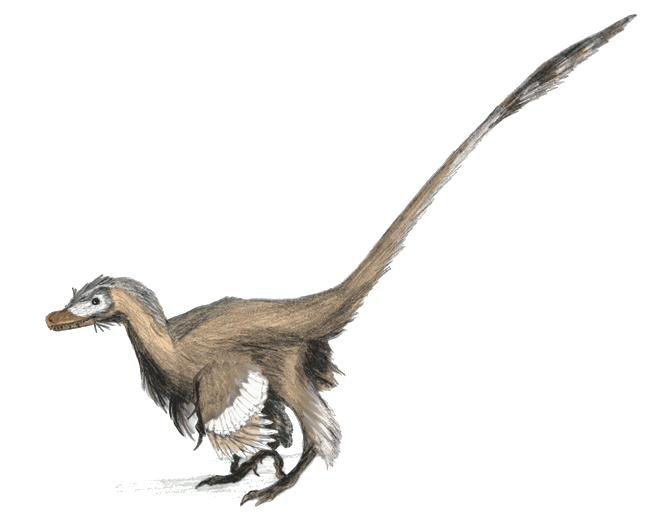

Brontosaurus

Brontosaurus ist einer der am besten bekannten Sauropoden. Das sehr große quadrupede Tier besaß einen langen Hals und einen langen, peitschenartigen Schwanz. Er war nicht so lang wie der verwandte, ähnlich gebaute Diplodocus, und mit einem geschätzten Gewicht von 30 t nicht so schwer wie Apatosaurus (35 t). Wie alle Sauropoden war er ein Pflanzenfresser.
Tyrannosaurus Rex

Tyrannosaurus (Latinisierung von altgriechisch τύραννος týrannos [„Herrscher, Despot“] sowie σαῦρος saúros [„Echse“]) ist eine Gattung bipeder, fleischfressender Dinosaurier aus der Gruppe der Theropoda.
Velociraptor

Velociraptor (lat. velox ‚schnell‘, raptor ‚Räuber‘) ist eine Dinosaurier-Gattung aus der Theropoden-Familie der Dromaeosauridae, die vor etwa 85 bis 76 Millionen Jahren in der späten Kreidezeit lebte.